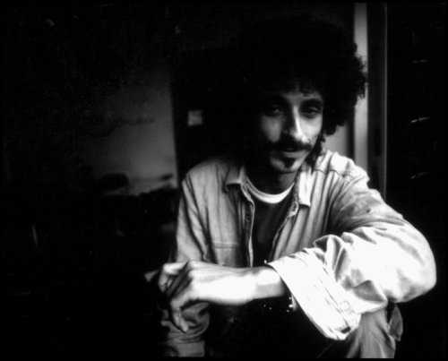

download and print
download and print
_ Welcome to Jaromil's _ __ __ __ _
_ | |___ _ _ _ _ _ _ __ _| | ___ / _| | \/ |_ _ __(_)_ _ __ _ ___
| || / _ \ || | '_| ' \/ _` | | / _ \ _| | |\/| | || (_-< | ' \/ _` (_-<
\__/\___/\_,_|_| |_||_\__,_|_| \___/_| |_| |_|\_,_/__/_|_||_\__, /__/
|___/
This journal is intended to satisfy the attention of those who support my nomadic development and share with me the faith in free and open source software, as well interests in media art, sustainable development and DIY recycling practices.
My publishing activity here is symmetrical in time: it started in 2008 and while progressing in the future it will also include publication of materials collected in the past. All content distributed is licensed with the Creative Commons license: "copylefted" by me and, at your option, by other authors involved.
If you enjoy my musings, get inspired and like to keep on reading: please consider making a donation to keep this activity alive. The content of this journal can also be re-licensed for commercial use on request, just contact me to arrange details.
My gratitude goes to the NIMK for hosting the dyne.org foundation, supporting my research and accepting me in its formidable team, as well to the bricolabs network for encouraging and helping me to cross the boundaries of my technical competence.
Since more than 10 years, well inspired by the GNU free software movement, I'm following the ideal of creating FOSS1 for freedom of expression, to let people communicate, freed from capitalist speculations and expensive hardware.
|  |
| early morning portrait photo by Rana Ghose |
Among open source software I created and maintain are: MuSE (for running a web radio), FreeJ (for vee-jay and real-time video manipulation), HasciiCam (ASCII video streaming) and dyne:bolic (efficient live-CD widely employed for media production and broadcasting). These creations are adopted and recommended by the Free Software Foundation and several other educational institutions worldwide.
For more informations see my homepage: http://rastasoft.org
The GNU Emacs editor originally written by Richard Stallman is used for writing, archival and publishing of all documents presented in this journal: together with the Muse Elisp extension this setup shifts most CMS functionalities to the client-side. The result is this set of statically served pages that don't require an expensive web server nor any database, while it lets me carry all documents, edit and preview them while off-line, relying on a simple web space instead of depending - and often licensing to - a third-party "content provider".
My personal opinion about Web2.0 is mostly unprintable and with this journal I'm happy to demonstrate an efficient alternative to it.
All audio and Video published here is encoded using OGG technology, an open and free format to compress audio and video : free from any patents, Vorbis and Theora are efficient alternatives to MP3 and MP4, they sound good and they feel even better ;) I advocate use of Ogg files as a standard for multimedia encoding, so there can be a format that anyone is free to implement and use into free software and open hardware players. For more informations see the PlayOgg campaign.
1. FOSS is a popular acronym for Free and Open Source Software

|


|


| Copyleft (C) 2000 - 2008 dyne.org foundation and respective authors. Verbatim copying and non-commercial distribution is permitted in any medium, provided this notice is preserved. Send inquiries & questions to dyne.org's hackers. |

|